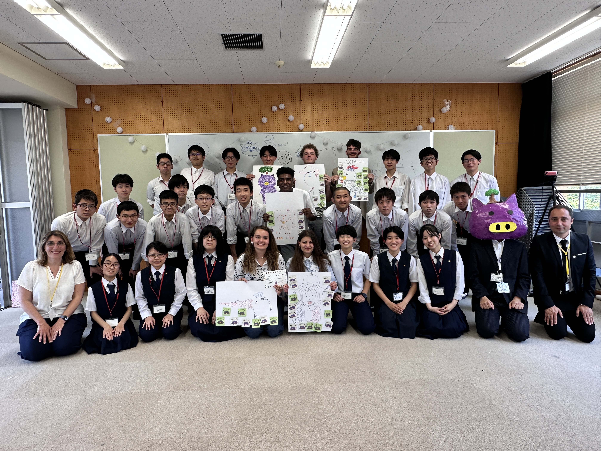
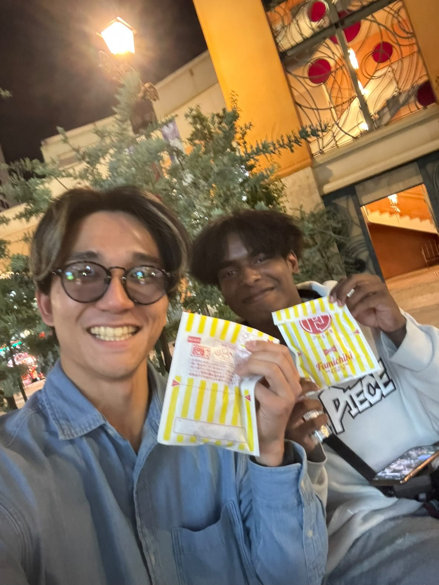
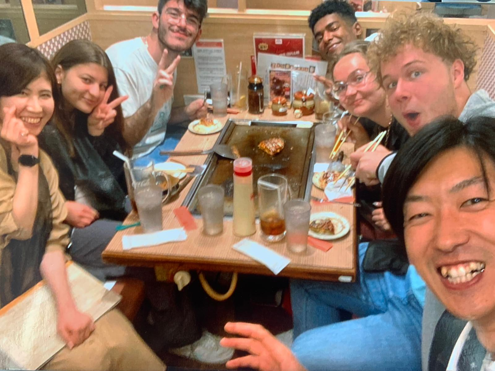

A path shaped by identity,
effort, and rebuilding.
Hard of hearing. Data student. Dancer. Language builder.
On the way back to Japan — for good.
"When I am in Japan, everything that weighs on me in France becomes quiet. I feel light. I feel myself."
Sofiane / Shoji — Solo trip, Kawasaki 2025Chapter 01
Who I am
Identity
My name is Sofiane. I also go by Shoji — 翔司 — a name I chose, a self I built.
I am hard of hearing. I grew up navigating a world not designed for me — the French educational system, social structures, a city that never quite felt like home.
I am a data science student, a former semi-professional volleyball player, a dancer, a photographer, and someone learning Japanese on his own since 2025.
What drives me
My path is not linear. But it is intentional.
I have always existed at the intersection of multiple worlds — between hearing and deaf communities, between France and Japan, between technical logic and artistic expression.
That intersection is not a contradiction. It is who I am.
Chapter 02
The first time I felt like myself
In my second year of university, I was selected among five students from INJS Paris to travel to Japan for an institutional program. Five students. I was one of them.

Among the 5 selected by INJS Paris — institutional visit to Japan
At Tsukuba University for the Deaf, we played a kind of tag. I was a chaser. My joy that day was at its highest. I ran until I could not stand. I collapsed on the ground, completely out of breath, legs gone. I had never experienced that before.
"I didn't even know I could feel that light."
I cried three times during that trip. Once during the stay. Once at the airport. Once at takeoff, leaving Japan behind. I also felt, somewhere I can't fully explain, the presence of my father.
Chapter 03
The dark period
What happened
When I returned to France — the depression hit. Hard. What I had found in Japan, I could no longer access here. The weight came back. The noise. The distance between who I was in Japan and who I was expected to be in France.
I had been hard of hearing my whole life, navigating a system not built for me. But coming back after finding a place where I felt whole — made the contrast unbearable.
The reconstruction
I rebuilt. Not because things became easier — but because I had a direction. The depression was real. The reconstruction was real too.
Step by step, I stopped just dreaming about Japan and started building the actual path to get there. Every action since then has been part of that plan.
"I had seen what was possible. That image didn't leave me."
Chapter 04
Going back — alone
I went back. Solo. Three weeks. I lived in Kawasaki — not as a tourist, but as someone testing whether this feeling was real or just an escape. It was real.

Avec Kuma (@kuma_wh_step) — rencontre spontanée, Kawasaki 2025
A grandmother from Okinawa stopped me in the street just to talk. I met people at a cultural festival who became real friends. I was interviewed by Kuma — a content creator I now stay in contact with. I lived — purely, simply — the daily life I had been dreaming about.

Dîner avec des amis du festival culturel
"The sense of being exactly where I was supposed to be."
Chapter 05
The promise
During my first trip, I spoke Japanese with a professor — enough to surprise everyone in the room, including myself. He told me to come back and study here. I promised I would. He said to be patient.

The moment everything changed — the promise made to the Japanese professor
"He said to be patient. I promised I would come back. I will."
Chapter 06
Why Keio SFC
.JPEG)
Premier jour avec Seita — maintenant étudiant à Keio SFC. On se retrouvera là-bas.
SFC is not just a university. It is the only place I have found where everything I am — data, accessibility, identity, language — can exist in the same space.
I already have a friend there. I already have a connection to the deaf community there. I already have a promise to keep there.
"SFC is where that project becomes possible. And I already know someone waiting for me there."